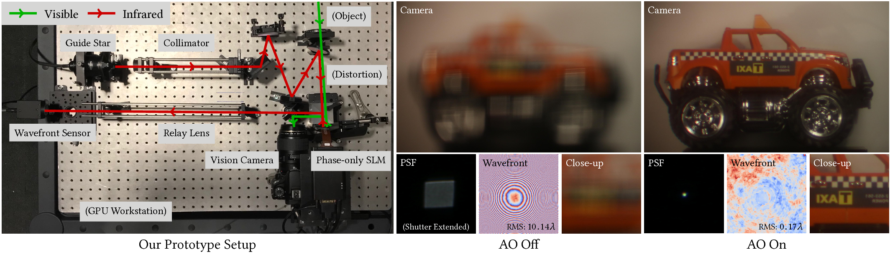

Towards Correcting Large-scale Distortions in Computational Cameras
Congli Wang, Qiang Fu, Xiong Dun, Wolfgang Heidrich Accepted to ACM Transactions on Graphics (Proc. SIGGRAPH), 2018

We propose to use a high resolution adaptive optics (AO) technique to correct for large distortions in photography ans vision applications. AO relies on the combination of a wavefront sensor and a phase modulator to measure and optically correct for incoming phase distortions. Based on a previously proposed high resolution wavefront sensor, our proposed AO prototype achieves unprecedented AO sensing and correcting simultaneous high spatial resolution for large phase distortions. An example for vision deblurring is shown on the right where a defocus distortion is being well compensated.
Abstract
Adaptive optics has become a valuable tool for correcting minor optical aberrations in applications such as astronomy and microscopy. However, due to the limited resolution of both the wavefront sensing and the wavefront correction hardware, it has so far not been feasible to use adaptive optics for correcting large-scale waveform deformations that occur naturally in regular photography and other imaging applications.
In this work, we demonstrate an adaptive optics system for regular cameras. We achieve a significant improvement in focus for large wavefront distortions by improving upon a recently developed high resolution coded wavefront sensor, and combining it with a spatial phase modulator to create a megapixel adaptive optics system with unprecedented capability to sense and correct large distortions.